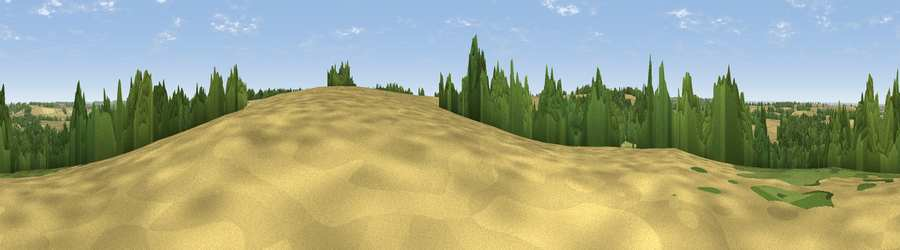

Viewpoint near Denton
#39574 in England · top 72% of its area beats it · near DentonThe view, rendered

A 360° render of this exact spot computed from the terrain model, tree cover and land cover — summer colours, afternoon light, calibrated against photographs of famous viewpoints. Real trees, hedges and buildings will differ in detail.
The panorama
Grey silhouette: terrain skyline in each direction (720 bearings, Earth curvature and refraction included). Dashed green: skyline with trees (+15 m) and buildings (+8 m) as obstacles. Blue strip: how far the ground is visible on each bearing.
Where the view opens
Wedge length = distance to the farthest visible ground on that bearing (vegetation-aware). Rings at 10, 25 and 50 km.
What fills the view
49% cropland · 29% woodland · 20% grassland · 1% built-up
Angular shares of the visible panorama (visual magnitude), not map area. Landscape diversity 0.48 (0–1 Shannon).
Key numbers
More beautiful places nearby
The staircase of upgrades: each row has a higher view potential than everything closer. Driving times are estimates from straight-line distance, calibrated against real road routing — check an actual route before setting out.
| Place | Direction | Drive | Score |
|---|---|---|---|
| Viewpoint near Denton | NNW · 3 km | ~7 min | 38.7 |
| Viewpoint near Belvoir | WNW · 5 km | ~11 min | 70.8 |
| Broombriggs Hill | WSW · 39 km | ~58 min | 74.4 |
| Viewpoint near Woodhouse Eaves | WSW · 39 km | ~59 min | 77.7 |
| Viewpoint near Mow Cop | WNW · 104 km | ~128 min | 78.9 |
| Viewpoint near Mow Cop | WNW · 104 km | ~128 min | 80.2 |
| Viewpoint near Little Wenlock | W · 125 km | ~149 min | 84.2 |
| The Wrekin | W · 126 km | ~150 min | 85.0 |
52.87513, -0.71438 · source: screening · position refined by local search. Computed location — check access rights before visiting.